THE EXPERIMENTS 26 pages · 21 orphaned
each arrived as a folder with its own index — this is the first thing that points at them
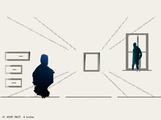
DRESS MARKOV_POET_ARCHIVE-FLY/cut/out/dress 15 vid · 8 MB ORPHAN — nothing points here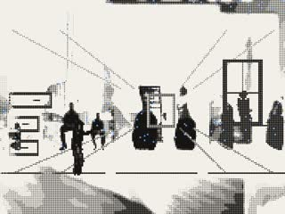
INHABIT MARKOV_POET_ARCHIVE-FLY/cut/out/inhabit 14 vid · 7 MB ORPHAN — nothing points here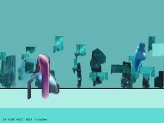
PREVIS MARKOV_POET_ARCHIVE-FLY/cut/out/previs 14 vid · 5 MB ORPHAN — nothing points here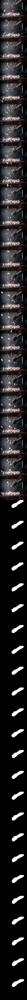
HELD MARKOV_POET_ARCHIVE-FLY/cut/out/held 135 img · 12 MB ORPHAN — nothing points here TEXTULE MARKOV_POET_ARCHIVE-FLY/cut/out/textule 5 vid · 1 MB ORPHAN — nothing points here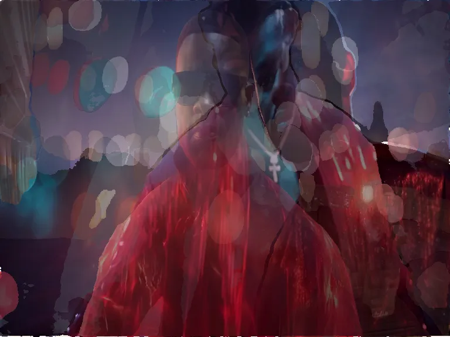
THE COLLAGES MARKOV_POET_ARCHIVE-FLY/cut/out/collage 33 img · 1 vid · 10 MB ORPHAN — nothing points here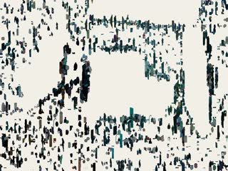
THE LOOM MARKOV_POET_ARCHIVE-FLY/cut/out/loom 4 vid · 16 MB ORPHAN — nothing points here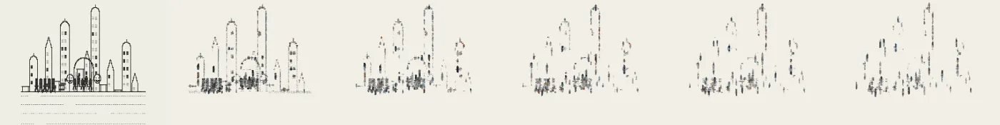
I AM SITTING IN A ROOM MARKOV_POET_ARCHIVE-FLY/cut/out/lucier 20 img · 2 vid · 5 MB ORPHAN — nothing points here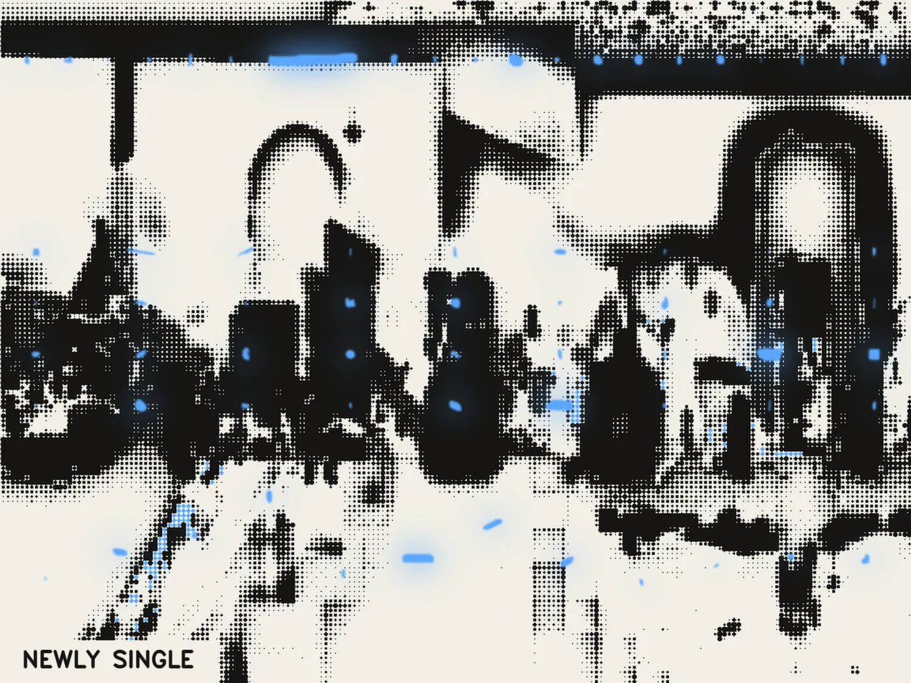
THE SETS MARKOV_POET_ARCHIVE-FLY/cut/out/scene 28 img · 4 MB ORPHAN — nothing points here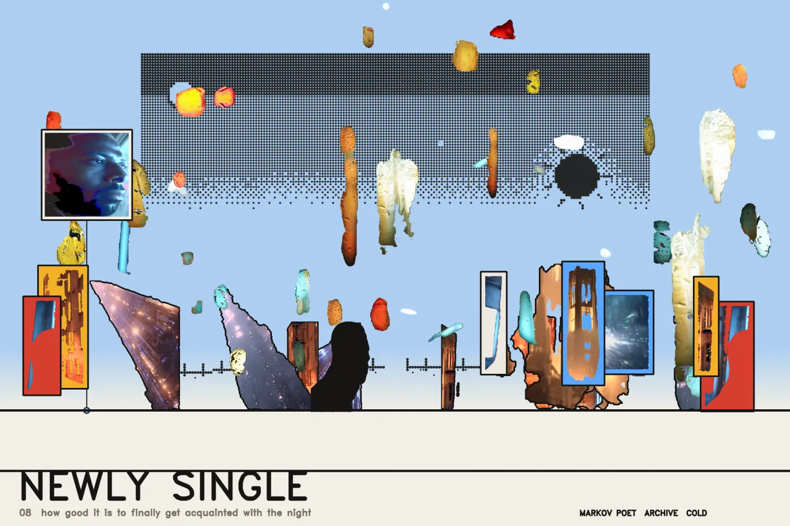
THE CITY MARKOV_POET_ARCHIVE-FLY/cut/out/archigram 14 img · 2 MB ORPHAN — nothing points here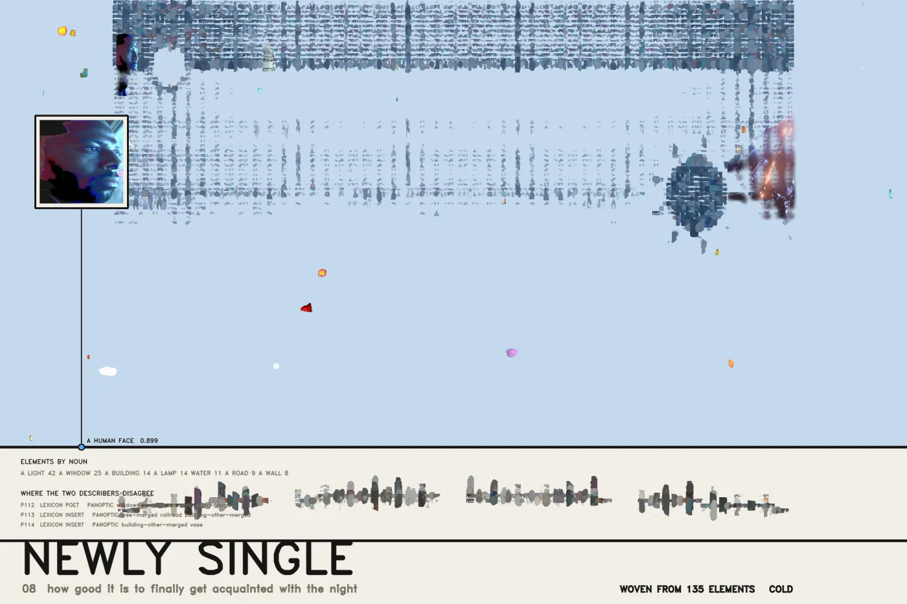
THE WOVEN SHEETS MARKOV_POET_ARCHIVE-FLY/cut/out/sheets 14 img · 1 MB ORPHAN — nothing points here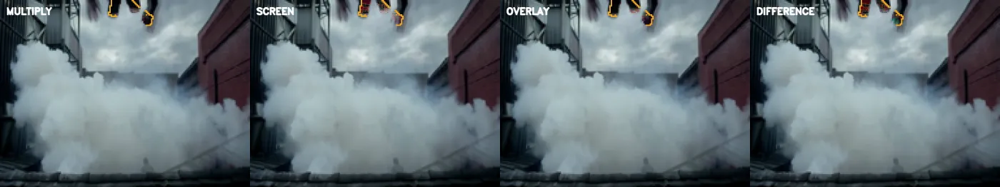
PATCHFIELD MARKOV_POET_ARCHIVE-FLY/cut/out/patchfield 1 img · 1 vid · 3 MB ORPHAN — nothing points here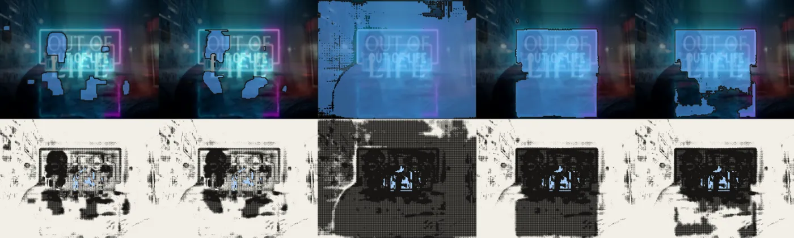
THE LAB — finding the body MARKOV_POET_ARCHIVE-FLY/cut/out/lab 9 img · 1 MB ORPHAN — nothing points here THE BOARD — every image, every prompt MARKOV_POET_ARCHIVE-FLY/BOARD 1 notes · 1 MB ORPHAN — nothing points here Every experiment MARKOV_POET_ARCHIVE-FLY/COLLAGE_AND_VIDEO 48 notes · 1 MB ORPHAN — nothing points here The collage zettels MARKOV_POET_ARCHIVE-FLY/COLLAGE_ZETTELS 109 notes · 1 MB ORPHAN — nothing points here THE ABERRATIONS MARKOV_POET_ARCHIVE-FLY/cut/out/lab not linked, but named in a script SAM 3 RUN — 129/129 MARKOV_POET_ARCHIVE-FLY/cut/out/lab not linked, but named in a script OPERATOR 14 · STUDIO MARKOV_POET_ARCHIVE-FLY/cut/out/op 1 MB ORPHAN — nothing points here OPERATOR 14 · STUDIO MARKOV_POET_ARCHIVE-FLY/cut/out/op15 1 MB ORPHAN — nothing points here OPERATOR 14 · STUDIO MARKOV_POET_ARCHIVE-FLY/cut/out/op16 1 MB ORPHAN — nothing points here which parts actually move MARKOV_POET_ARCHIVE-FLY/cut/out/op16 not linked, but named in a script PASTE — the blend table MARKOV_POET_ARCHIVE-FLY/cut/out/paste 0 MB ORPHAN — nothing points here HALFWORLD COMPOSER MARKOV_POET_ARCHIVE-FLY/cut/out/studio not linked, but named in a script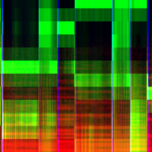
STAINED GLASS — the halfworld as a colouring book MARKOV_POET_ARCHIVE-FLY/cut/out/studio not linked, but named in a script HALFWORLD STUDIO MARKOV_POET_ARCHIVE-FLY/cut/out/studio 1 notes · 1 MB ORPHAN — nothing points hereTHE SUITE 50 pages · 5 orphaned
the fourteen halfworlds and the instruments built around them
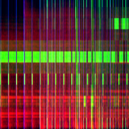
WYGWYL — fourteen halfworlds wygwyl 1072 img · 1 vid · 1402 audio · 30 notes · 537 MB 00-title-a — a WYGWYL halfworld wygwyl ORPHAN — nothing points here 00-title-b — a WYGWYL halfworld wygwyl ORPHAN — nothing points here 00-title-c — a WYGWYL halfworld wygwyl ORPHAN — nothing points here 00-title-d — a WYGWYL halfworld wygwyl ORPHAN — nothing points here 00-title-e — a WYGWYL halfworld wygwyl ORPHAN — nothing points here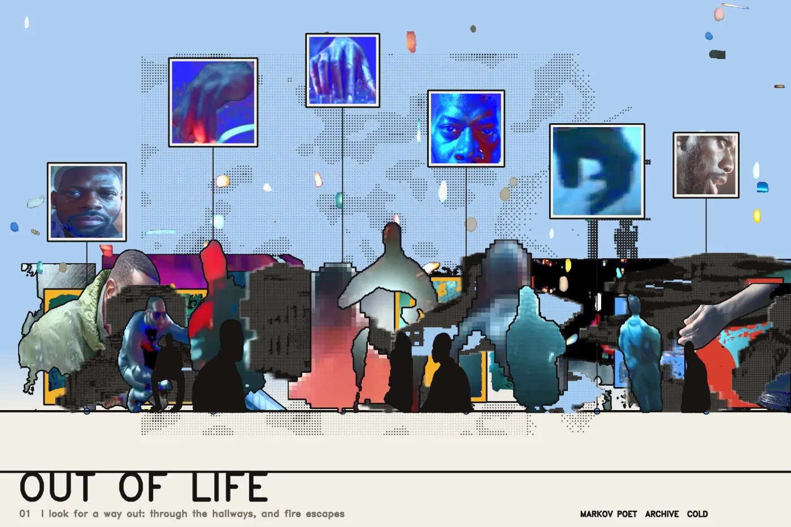
01-out-of-life — a WYGWYL halfworld wygwyl 01b-out-of-life-blend — a WYGWYL halfworld wygwyl not linked, but named in a script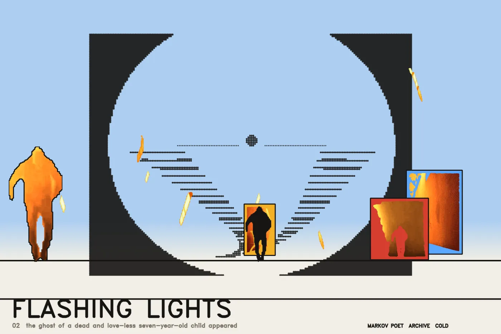
02-flashing-lights — a WYGWYL halfworld wygwyl not linked, but named in a script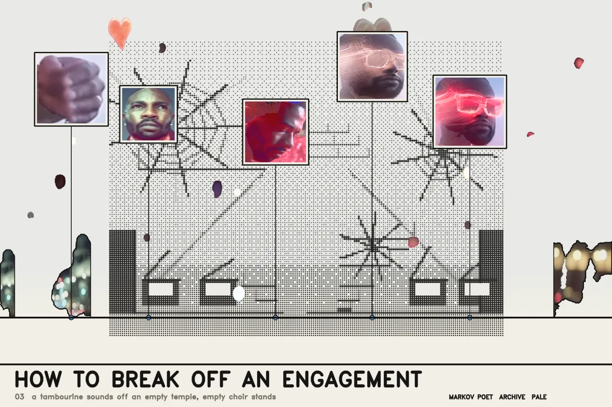
03-how-to-break-off-an-engagement — a WYGWYL halfworld wygwyl not linked, but named in a script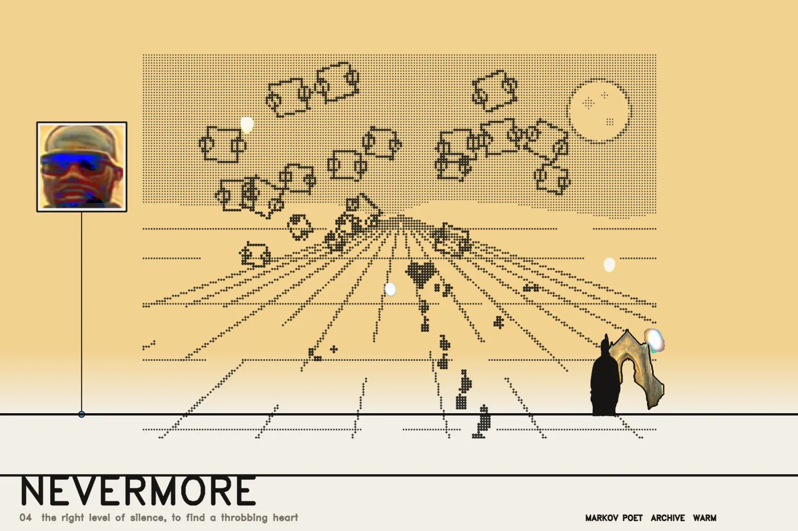
04-nevermore — a WYGWYL halfworld wygwyl not linked, but named in a script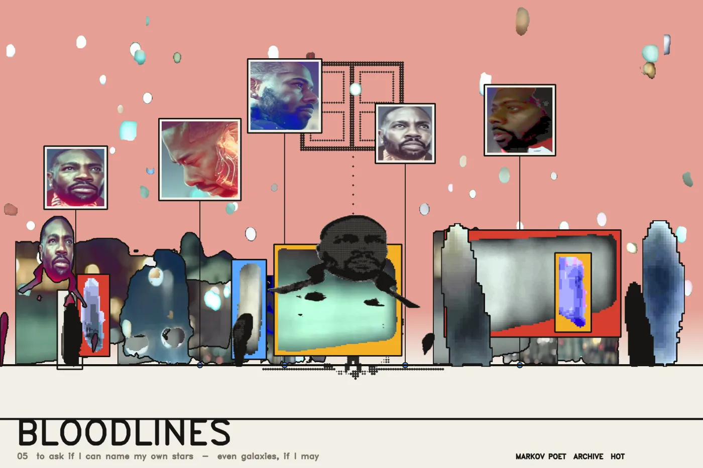
05-bloodlines — a WYGWYL halfworld wygwyl not linked, but named in a script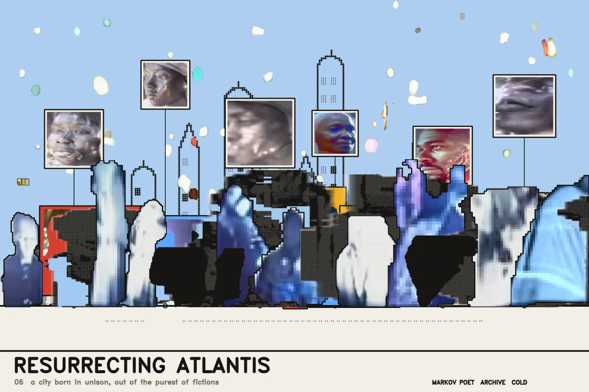
06-resurrecting-atlantis — a WYGWYL halfworld wygwyl not linked, but named in a script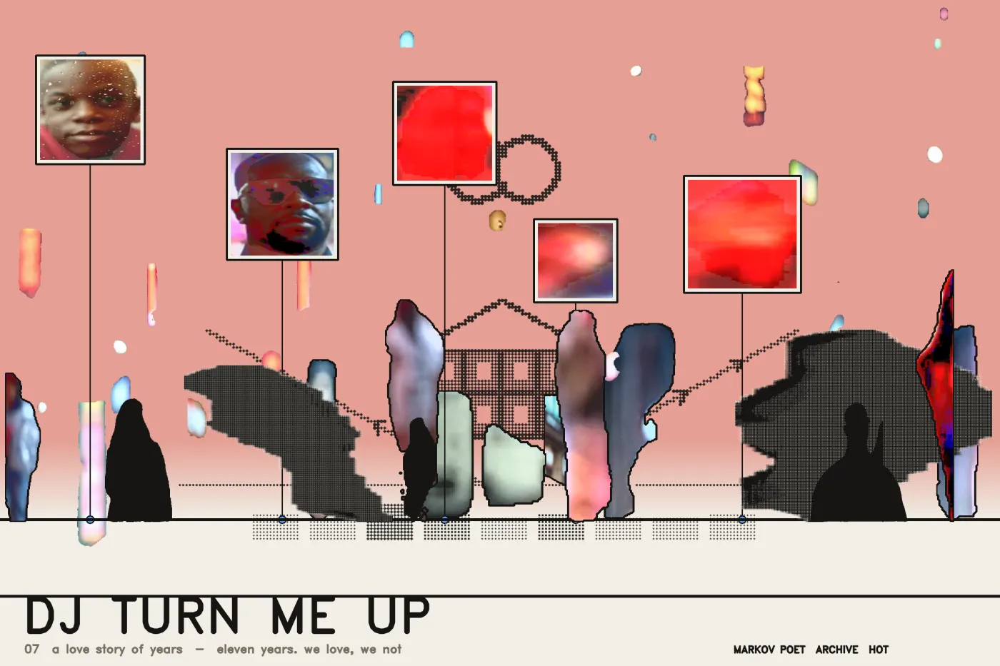
07-dj-turn-me-up — a WYGWYL halfworld wygwyl not linked, but named in a script 08-newly-single — a WYGWYL halfworld wygwyl not linked, but named in a script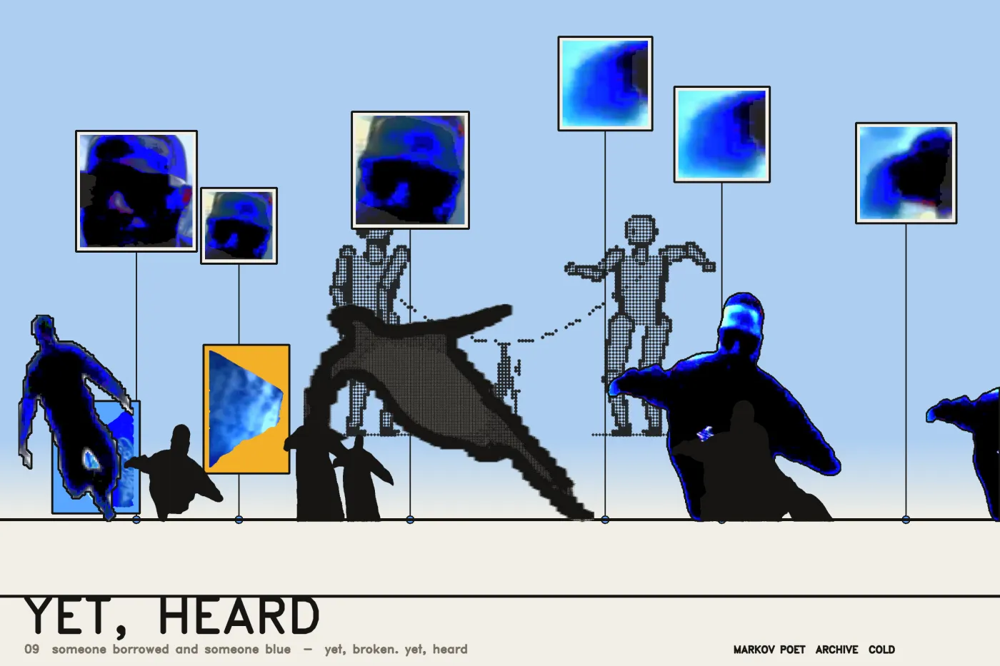
09-yet-heard — a WYGWYL halfworld wygwyl not linked, but named in a script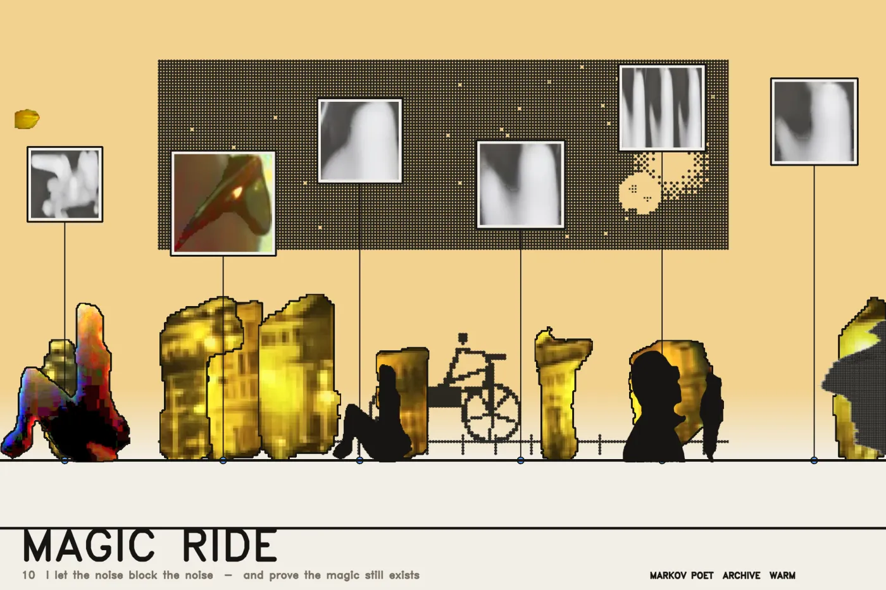
10-magic-ride — a WYGWYL halfworld wygwyl not linked, but named in a script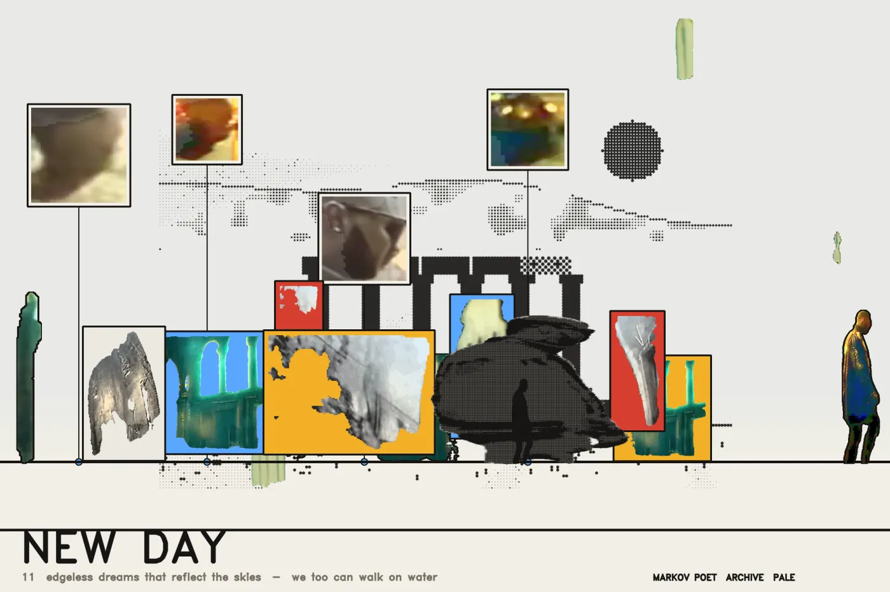
11-new-day — a WYGWYL halfworld wygwyl not linked, but named in a script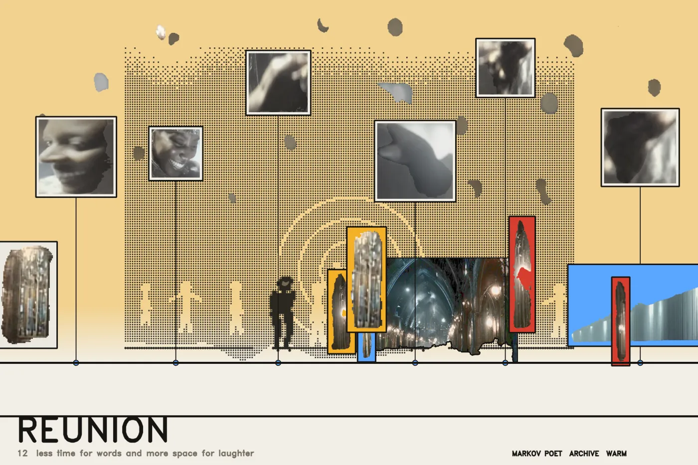
12-reunion — a WYGWYL halfworld wygwyl not linked, but named in a script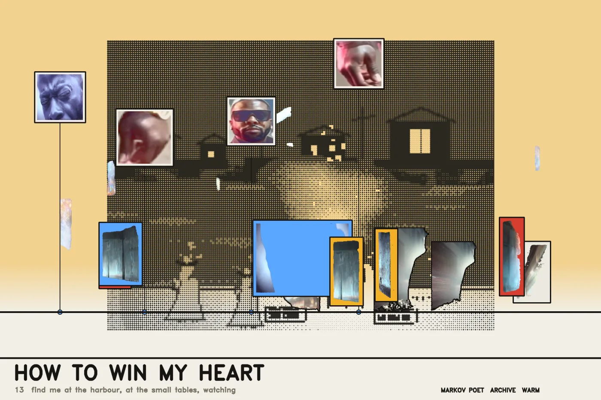
13-how-to-win-my-heart — a WYGWYL halfworld wygwyl not linked, but named in a script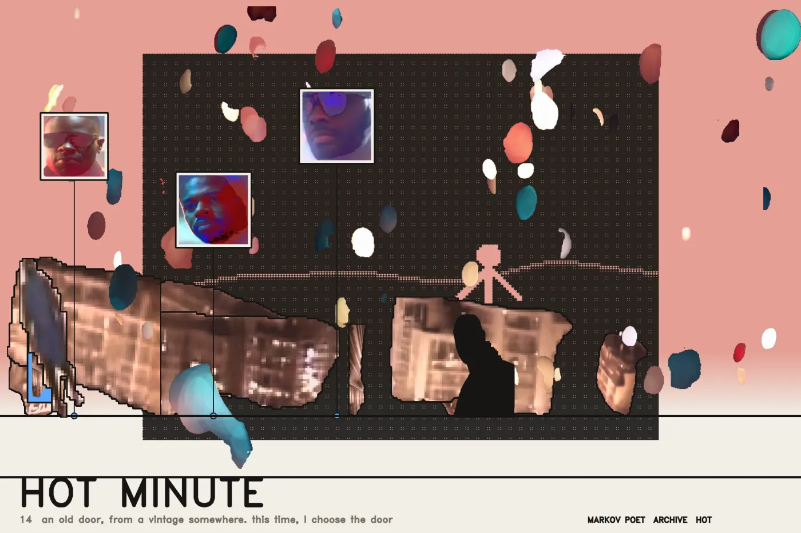
14-hot-minute — a WYGWYL halfworld wygwyl not linked, but named in a script WYGWYL ATLAS wygwyl THE PACING DESK wygwyl CLAP-SKETCH / the little samples wygwyl THE CODEX wygwyl RADIODRAW — a collage that is a picture and a sound at once wygwyl DJ — a WYGWYL halfworld instrument wygwyl SOUND FAMILIES wygwyl FRESCO PLAYER wygwyl THE GENOME wygwyl WYGWYL VOICE OBSERVATORY wygwyl POEM WORLDS wygwyl RADIO ATLANTIS wygwyl RADIO-SCAPES — the water of atlantis, playing itself wygwyl WYGWYL RADIO — fourteen films playing themselves wygwyl WYGWYL RECONSTITUTE wygwyl WYGWYL VOICE SAMPLER wygwyl ES+ SEAL / Atlantis Track Workshop wygwyl SKETCH RADIO — draw a station, hear it, and measure whether it arrived wygwyl SKETCHRADIO — word · voice · timed mark · world · score wygwyl SONG OBSERVATORY wygwyl WYGWYL SONIC FIELD wygwyl WYGWYL — the whole suite from one clock wygwyl titles.html — a WYGWYL halfworld wygwyl THE TRANSMISSION wygwyl VOICEBATH wygwyl THE WATER TABLE wygwyl WORLD SCORE wygwyl zz-gait — the gait bench wygwyl not linked, but named in a script zz-over — the over bench wygwyl not linked, but named in a scriptTOOLS AND HARNESSES 5 pages
render rigs, benches and one-off desks
contact — the seven
harness
not linked, but named in a script
render-harness
harness
not linked, but named in a script
render-motion-harness
harness
not linked, but named in a script
render-scene-harness
harness
not linked, but named in a script
motion strip
harness
not linked, but named in a script
EVERYTHING ELSE 10 pages · 3 orphaned
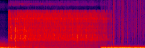
ATLANTIS SOUND PACK wygwyl/pack 210 img · 433 audio · 81 MB ORPHAN — nothing points here OUT OF LIFE — a test suite wygwyl/outoflife 104 img · 1 notes · 1 MB ORPHAN — nothing points here ASTER HOUSE — memory as a stage . HELLO WORLD: p5.js — theory / text / image / error / prompt hello-world-p5 1 notes · 1 MB ORPHAN — nothing points here I REMEMBER BEING A BUTTERFLY — a halfworld . 0 MB I REMEMBER BEING A BUTTERFLY · the periodic table . THE CUT BOOK — where the doors are wygwyl/cut 1 notes · 0 MB ICARO-PRO · SPATIOTEMPORAL FLOW ENGINE wygwyl/icaro not linked, but named in a script ICARO-PRO · FLOW ENGINE wygwyl/icaro not linked, but named in a script TOOL — a WYGWYL / OUT OF LIFE instrument wygwyl/outoflife not linked, but named in a script